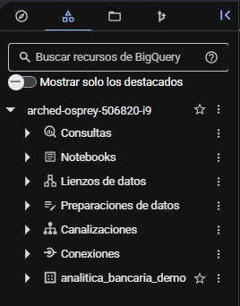
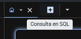

BigQuery — entorno
BigQuery es la plataforma analítica que utilizaremos para explorar tablas y ejecutar consultas GoogleSQL. Antes de escribir SQL, conviene aprender a orientarse en su interfaz y revisar qué datos existen.
1. ¿Qué es BigQuery?
BigQuery es el data warehouse analítico administrado de Google Cloud. Permite consultar grandes volúmenes de datos sin administrar servidores y trabajar con SQL, Python y otras capacidades integradas.

2. Proyecto → dataset → tabla
Para orientarse en BigQuery es útil recordar una jerarquía sencilla. El proyecto contiene datasets; los datasets contienen tablas y otros objetos analíticos.
El nombre completo de una tabla puede escribirse como:
arched-osprey-506820-i9.analitica_bancaria_demo.movimientos_diarios
| Nivel | Qué representa | Ejemplo del curso |
|---|---|---|
| Proyecto | Contenedor administrativo de recursos. | arched-osprey-506820-i9 |
| Dataset | Agrupa tablas, vistas y otros objetos de BigQuery. | analitica_bancaria_demo |
| Tabla | Objeto tabular con filas y columnas. | clientes, movimientos_diarios |
3. Abrir BigQuery y confirmar el contexto
- Desde Google Cloud Console, confirma que el proyecto activo sea el del curso.
- Busca BigQuery en la barra superior.
- Abre BigQuery.
- En el panel izquierdo, localiza el proyecto arched-osprey-506820-i9.
4. Explorer: encontrar datasets y tablas
El panel Explorer permite navegar los recursos de BigQuery. Allí puedes expandir un proyecto, acceder a sus datasets y seleccionar tablas o vistas.
- Expande el proyecto.
- Abre Datasets.
- Selecciona analitica_bancaria_demo.
- Revisa las tablas disponibles.
- Selecciona una tabla antes de escribir SQL.

5. Schema: qué columnas existen
La pestaña Schema muestra la definición del esquema de una tabla. Aquí puedes revisar nombres de campos, tipos técnicos y modos.
| Elemento | Qué te ayuda a comprobar |
|---|---|
| Name | Nombre real de la columna. |
| Type | Tipo técnico, por ejemplo STRING, INT64, NUMERIC o DATE. |
| Mode | Cómo se almacena el campo, por ejemplo NULLABLE o REPEATED. |
| Description | Descripción documentada del campo, cuando exista. |
6. Details: propiedades de la tabla
La pestaña Details permite revisar información y metadatos de la tabla. Dependiendo del tipo de tabla y configuración, puedes encontrar descripción, cantidad de filas, tamaño, ubicación y otras propiedades.
7. Preview: observar filas sin diseñar una consulta
La pestaña Preview muestra una muestra de los datos de una tabla. Es útil para inspeccionar rápidamente su forma y algunos valores antes de escribir SQL.
La pestaña Preview no está disponible para todos los tipos de tabla, por ejemplo ciertas tablas externas o vistas.
8. Editor SQL
El editor de consultas es el espacio donde escribiremos GoogleSQL. La documentación actual de BigQuery describe esta pestaña como el lugar donde se crean y ejecutan consultas SQL y se revisan sus resultados.
- Abre una nueva consulta SQL.
- Escribe o pega la consulta.
- Revisa que no existan errores visibles de sintaxis.
- Cuando la interfaz muestre una estimación de procesamiento, revísala antes de ejecutar.
- Ejecuta únicamente cuando tengas claro qué pregunta responde la consulta.

9. Ejecutar una consulta
BigQuery puede mostrar avisos de configuración, permisos o APIs que no necesariamente impiden trabajar con los recursos ya preparados para el curso. Si puedes abrir la tabla, ejecutar la consulta o ver resultados, continúa según las instrucciones del relator.
No habilites APIs ni cambies permisos por tu cuenta. Si la consulta no se puede ejecutar de verdad, detente y consulta al relator.
Cuando la consulta esté lista, utiliza Run / Ejecutar. Para empezar, una consulta simple puede seleccionar pocas columnas y limitar la cantidad de filas mostradas.
Ejemplo:
SELECT
cliente_id,
segmento,
region,
nivel_riesgo
FROM `arched-osprey-506820-i9.analitica_bancaria_demo.clientes`
LIMIT 10;
10. Leer la tabla de resultados
Después de ejecutar, BigQuery muestra los resultados de la consulta. Antes de sacar conclusiones, revisa:
- qué columnas devolvió la consulta;
- qué representa una fila del resultado;
- si los filtros aplicados corresponden a la pregunta;
- cuántas filas aparecen;
- si el resultado cambió el grano respecto de la tabla original.

11. ¿Dónde aparece esto en la Prueba Tipo?
BigQuery aparecerá dos veces en la evaluación:
Durante el trabajo del agente
El agente consultará los esquemas de movimientos_diarios y cuentas_productos, construirá una consulta y la ejecutará una sola vez.
Durante la verificación
Tú abrirás BigQuery, ejecutarás la consulta guardada en consulta.sql y comprobarás que sus resultados sean consistentes con resultado.csv.
- Google Cloud — BigQuery documentation
- Google Cloud — Explore BigQuery in the Google Cloud console
- Google Cloud — Create and use tables
- Google Cloud — Managing table data
- Google Cloud — Estimate and control costs
La estructura pedagógica se mantiene alineada con la Clase 3: Explorer → Schema/Details/Preview → editor SQL → resultados, revisando grano y columnas antes de consultar.